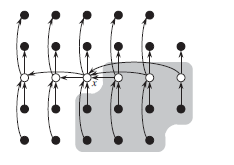

中位数和顺序统计量
在一个由 n 个元素组成的集合中，第 i 个顺序统计量是该合集中第 i 小的元素。而中位数，用非形式化的描述来说，一个中位数是它所属集合的“中点元素”。
1.同时找到最大值和最小值
通过最多 3(n/2)次比较就可以同时找到最大值和最小值。其主要思想是：将输入元素成对的进行处理，首先将一对输入元素互相比较，然后再将较小的与最小值比较，较大的与最大值比较。这样，每对元素仅需要 3 次比较，而不是 4 次。
其 C 语言实现：
#include <stdlib.h> void find_min_max(int *A, int *min, int *max) { *min = 65535; *max = 0; int i; for (i = 0; i < sizeof(A); i = i + 2) { if (i + 1 <= sizeof(A)) { if (A[i] < A[i + 1]) { if (A[i] < *min) *min = A[i]; if (A[i + 1] > *max) *max = A[i + 1]; } else { if (A[i + 1] < *min) *min = A[i + 1]; if (A[i] > *max) *max = A[i]; } } } } int main(void) { int min, max; int A[] = {1,3,5,7,98,3,3,12,3,54}; find_min_max(A, &min, &max); printf("min = %d, max = %d\n", min, max); }
2.期望为线性时间的选择算法
rand_select 算法以快速排序为模型，将输入数组进行递归划分。但不同的是，快速排序会递归处理划分的两边，而 rand_select 只处理一边。期望运行时间为Θ(n)。
算法的 C 语言实现：
int rand_select(int *A, int p, int r, int i) { /* * 期望为线性的选择算法 */ int k, q; if (p == r) return(A[p]); q = rand_partition(A, p, r); k = q - p + 1; if (i == k) //the pivot value is the answer return(A[q]); else if (i < k) return rand_select(A, p, q - 1, i); else return rand_select(A, q + 1, r, i - k); }
3.最坏情况为线性的选择算法
该算法也使用了快速排序中的划分算法 partition，但是做了修改，把划分的主元也作输入参数。
通过以下步骤，算法 SELECT 可以确定一个有 n>1 个不同元素的输入数组中第 i 小元素：
- 将输入数组的 n 个元素划分为 n/5 组，每组 5 个元素，且至多有一组由剩下的 n mod 5 个元素组成。
- 寻找这 n/5 组中每一组的中位数：首先对每组元素进行插入排序，然后确定每组有序元素的中位数。
- 对第 2 步中找出的 n/5 个中位数，递归调用 SELECT 以找出其中位数 x（如果有偶数个中位数，约定 x 是较小的）。
- 利用修改过的 PARTITION 版本，按中位数的中位数 x 对输入数组进行划分。让 k 比划分的低区中的元素数目多 1，因此 x 是第 k 小元素，并且有 n-k 个元素在划分的高区。
- 如果 i=k，则返回 x。如果 i<k，则在低区递归调用 SELECT 来找出第 i 小的元素。如果 i>k，则在高区递归查找第 i-k 小的元素。

所有元素用小圈表示，每一组的 5 个元素在同一列上。每组中位数用白色标识，x为中位数的中位数。箭头从较大的元素指向较小的元素。大于 x 的元素的背景以阴影来表示。
其伪代码为：
SELECT(A, p, r, i)
{
// 步骤１、２
count = ceiling(n/5);
for i = 1 to count-1
insertion sort A[(i-1)*5+1...i*5+1];
insertion sort A[(count-1)*5+1...n];
if count ==1
return A[floor(n/2)];
// 步骤３
create array B;
for i = 1 to count-1
B[i] = A[(i-1)*5+3];
B[count] = A[(count-1)*5 + floor((n - (count-1)*5)/2)];
x = SELECT(B, 1, count, floor(count/2));
// 步骤４
q = PARTITION_X(A, p, r, i);
k = q-p+1;
// 步骤５
if i == k
return x;
elseif i < k
return SELECT(A, p, q-1, i);
else
return SELECT(A, q+1, r, i-k);
}
最坏情况为线性时间的选择算法 T(n) = cn 中的常数 c 相当大，它依赖于这些常数和运行时间，而它们都是由机器的性能来决定。所以这个算法实际上没有那么热门，随机算法会运行的非常快。
（伪代码转自：http://blog.chinaunix.net/uid-26822401-id-3163058.html）